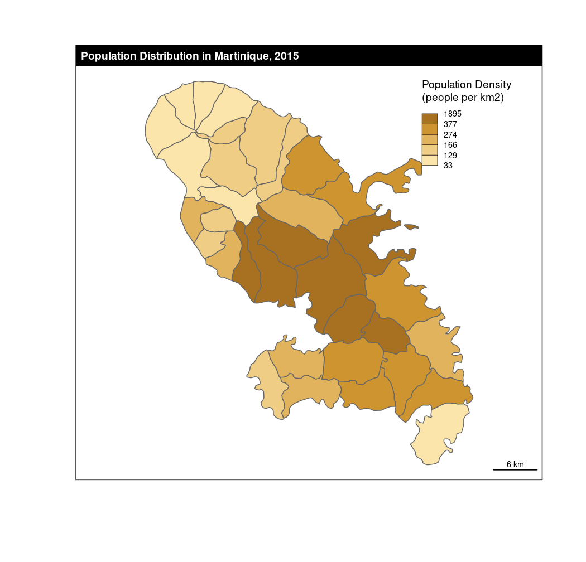
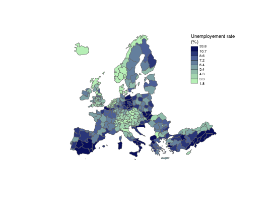
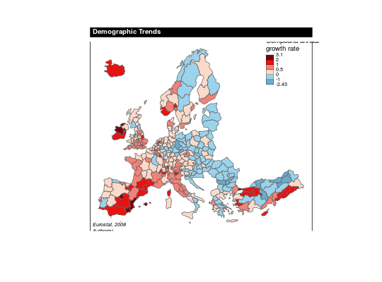

Plot a chorpoleth layer.
choroLayer(spdf, df, spdfid = NULL, dfid = NULL, var, breaks = NULL, method = "quantile", nclass = NULL, col = NULL, border = "grey20", lwd = 1, colNA = "white", legend.pos = "bottomleft", legend.title.txt = var, legend.title.cex = 0.8, legend.values.cex = 0.6, legend.values.rnd = 0, legend.nodata = "no data", legend.frame = FALSE, add = FALSE)
The optimum number of class depends on the number of geographical objects. If nclass is not defined, an automatic method inspired by Sturges (1926) is used : nclass = 1+3.3*log10(N), where nclass is the number of class and N is the variable length.
If breaks is used then nclass and method are not.
"sd", "equal", "quantile" and "fisher-jenks" are classIntervals methods. Jenks and Fisher-Jenks algorithms are based on the same principle and give quite similar results but Fisher-Jenks is much faster. The "q6" method uses the following quantile probabilities: 0, 0.05, 0.275, 0.5, 0.725, 0.95, 1. The "geom" method is based on a geometric progression along the variable values.
Herbert A. Sturges, « The Choice of a Class Interval », Journal of the American Statistical Association, vol. 21, n° 153, mars 1926, p. 65-66.
getBreaks, carto.pal, legendChoro, propSymbolsChoroLayer
data("nuts2006") ## Example 1 nuts2.df$unemprate <- nuts2.df$unemp2008/nuts2.df$act2008*100 choroLayer(spdf = nuts2.spdf, df = nuts2.df, var = "unemprate")## Example 2 nuts2.df$unemprate <- nuts2.df$unemp2008/nuts2.df$act2008*100 choroLayer(spdf = nuts2.spdf, df = nuts2.df, var = "unemprate", method = "quantile", nclass = 8, col = carto.pal(pal1 = "turquoise.pal", n1 = 8), border = "grey40", add = FALSE, legend.pos = "topright", legend.title.txt = "Unemployement rate\n(%)", legend.values.rnd = 1)## Example 3 # Compute the compound annual growth rate nuts2.df$cagr <- (((nuts2.df$pop2008 / nuts2.df$pop1999)^(1/9)) - 1) * 100 summary(nuts2.df$cagr)#> Min. 1st Qu. Median Mean 3rd Qu. Max. #> -2.42900 -0.08116 0.27750 0.31550 0.65960 3.02800 #># Plot the compound annual growth rate cols <- carto.pal(pal1 = "blue.pal", n1 = 2, pal2 = "red.pal", n2 = 4) choroLayer(spdf = nuts2.spdf, df = nuts2.df, var = "cagr", breaks = c(-2.43,-1,0,0.5,1,2,3.1), col = cols, border = "grey40", add = FALSE, legend.pos = "topright", legend.title.txt = "Compound annual\ngrowth rate", legend.values.rnd = 2)# Layout plot layoutLayer(title = "Demographic Trends", sources = "Eurostat, 2008", scale = NULL, frame = TRUE, col = "black", coltitle = "white")